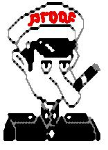
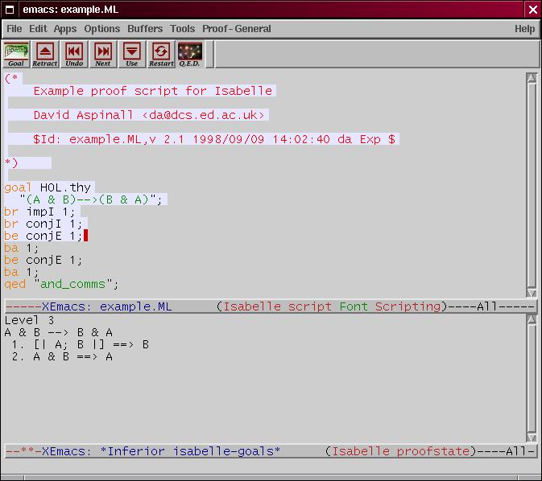

|  |
|

This is a picture of Isabelle Proof General running inside XEmacs,
replaying a simple proof.
The top half of the window displays the proof script.
The blue highlighted region is the part of the script which has been
sent to the proof process so far. It cannot be edited.
The bottom half of the window displays the output from Isabelle
at each stage of the proof.